| clock |
The clock module includes following features:
Combination with the time control program
The clock class is combined with the time control program, which can be started in th AX-Viewer. The day-designations, shown in the form in the time control program, can be changed in the server-data of the clock class.
Its possible to input up to 16 designations
for the days, shown in the rows of the form in the time control program.
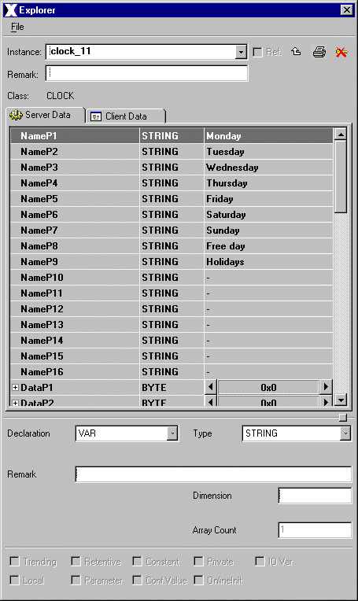
Figure 1: Possible designations for the days in the program
=> See section "Time Control Program"
Simulation Mode
In the Simulation PopUp the user has the
possibility of sending the entered simulation time to the PLC instead of
the actual time (if the checkbox "Simulation ON / OFF" is set). So its
possible to simulate the settings of channels in different time periods,
without changing the entry in the time-control-program.
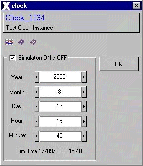
Figure 2: PopUp - activated Simulation
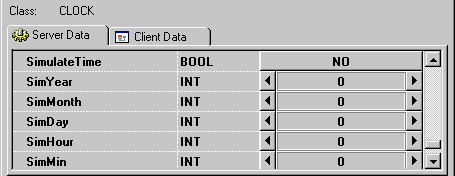
Figure 3: Simulation Variables
Pop-Up Menu
The clock class contains an interface pop-up window
for Operation. This window is already built into the class and no further
configuration is necessary to access it. The Operator Interface pop-up
window is accessed by selecting the Simulation-Button at the clock object.
Trending
As a default setting, the clock class will trend
the eight output channels.
Features | Installation | User Interface | Time Control Program
The class clock is comprised of the following
components (files):
| Class Component | Description | File Name(s) |
| Program File | Program, which runs in the PLC | clockaxx.axx |
| Program File | Graphical program surface | clockprg.axa |
| Class Color File | Includes some class specific color definitions. | CLOCK.color |
| Class File | Includes the process picture representation and any popup menus. | CLOCK.symbol |
| Graphic Files | Class Specific Graphic Files for both, class definition and documentation. | axclassdoku16.bmp
axclassdoku_grey16.bmp axinstanzdoku16.bmp axinstanzdoku_grey16.bmp axparam16.bmp axparam_grey16.bmp axservice16.bmp axservice_grey16.bmp axtrend16.bmp axtrend_grey16.bmp (and some documentation
|
| HTML Document | HTML document for Online Help. | clock.htm |
Installation: The class color file, the class file, the graphic files and the HTML-Document file must be copied into a common sub directory within the project's "classlib" directory. The name of the common directory can be chosen freely.
The .axx-file and the .axa-file must be
copied into the "bindebug"-directory.
Features | Installation | User Interface | Time Control Program
The clock's graphical user interface includes:
The eight output channels are represented
by small circles.
The circles denote the current state of the channel
by color: red if inactive and green if set.
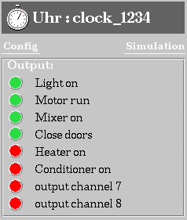
Figure 4: Graphical Representation
| circle is red - output-channel is inactive | |
| circle is green - output-channel is active |
2. Operator Simulation PopUp
The Simulation PopUp is invoked by selecting the Simulation-Link on the class graphical representation.
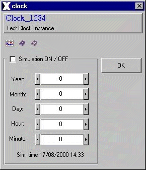
Figure 5: The Simulation PopUp
The Operator Simulation Menu is comprised of the following:
Figure 6: PopUp with the set "Simulation
ON / OFF"- Checkbox
Its possible to give the output channels, shown on the graphical representation, other designations in the server-data of the class.
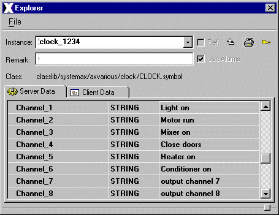
Figure 7: Possible designations for
the output channels
Features | Installation | User Interface | Time Control Program
The Time Control Program can be started
in the AX-Viewer. There is an item in the menu bar called "Time Control".
After selecting "clock programs" the following window will be invoked.
In the left part of the window, the existing clock-objects of the project
are listed. Now the user can select one of the listed clock objects. Its
possible to create a time control program for each clock object. First
the user can choose one of the output channels in the channel bar. When
the mouse-arrow is accross the form, an order and the time, associated
to the mouse-position will be visible above the mouse-arrow. By entering
the left mouse button, the user can draw a line in a day-designation row,
which represents the setting of the chosen channel for a time period. The
length of the line is associated to the time period. By entering the right
mouse button the line will be deleted and the output channel will be reset.
Its only possible to set the output channels in 5 minute steps.
The setting of all eight output channels
at the same time is possible.
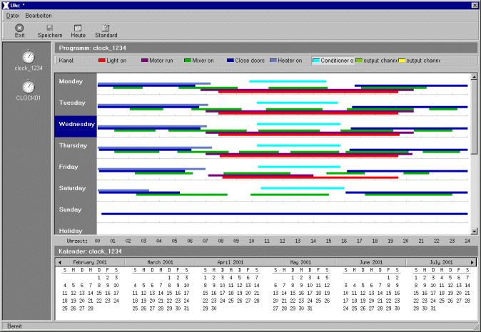
Figure 8: The time control program
window
If the time which is set in the program is reached, the color of the selected output channel in the graph will turn from red to green.
Figure 9: Graph with the set output
channel
In the program, the user has the possibility
of assigning dates as holidays by executing the following steps:
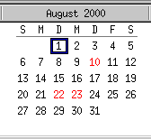
Figure 10: Calendar with defined Holidays
If there is no program defined for a day
in the calendar area, the background of the day-display is grey.
If the weekday-designation in the form is not the same as the weekday in the calendar area, which the program is associated to, the background of the day-display will turn to orange.
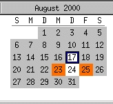
Figure 11: day-display without any
defined programs and day-displays with defined programs from different
weekdays
Standard Settings
By selecting the "standard"-icon under the menu bar, all defined programs for the year will be deleted and the standard-settings will be activated. That means, for each day in the calendar area, the program for the associated weekday in the form will be defined.
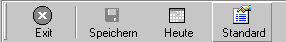
Figure 12: Standard-Icon
All of the day-displays in the calendar-area will turn to white, because each day will be connected to the associated weekday-settings in the program-window.
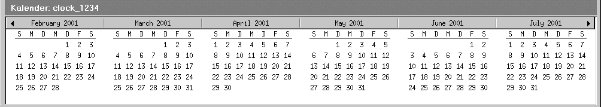
Figure 13: calendar-area, when
the standard-settings are activated
Features | Installation | User Interface | Time Control Program